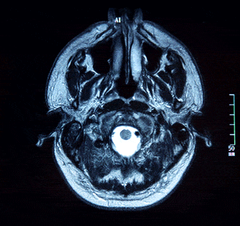

Bienvenido a KASL

El origen de KASL
El nombre “KASL” nace de una idea simple, pero cargada de significado y compromiso. Sus siglas representan a los responsables detrás del objetivo de proteger, cuidar y salvar vidas. Más que un nombre, simboliza la unión de conocimiento, tecnología y vocación humana al servicio de cada paciente. Así, “KASL” no solo identifica a una clínica, sino a un grupo de profesionales comprometidos con convertirse en la esperanza y el respaldo de quienes más lo necesitan.
Nuestra función
La función principal de nuestra clínica es obtener imágenes del interior del cuerpo humano que ayudan a diagnosticar, vigilar o tratar diferentes enfermedades o lesiones. Para llevarlo a cabo, se utilizan técnicas avanzadas como radiografías, ecografías, tomografías computarizadas (TC), resonancias magnéticas (RM) o mamografías.
Soporte de diagnóstico
Las imágenes obtenidas con las distintas pruebas son interpretadas por médicos especialistas en radiología (radiólogos), quienes emiten un informe exhaustivo para que el médico solicitante pueda tomar las decisiones óptimas sobre el tratamiento.
Nuestra clínica no suele tratar directamente las enfermedades, sino que realiza las diferentes pruebas para poder aportar información visual clave para que otros especialistas las traten.